本文将主要分享以下四个部分的内容：
首先来看一下调度器流程概览图：
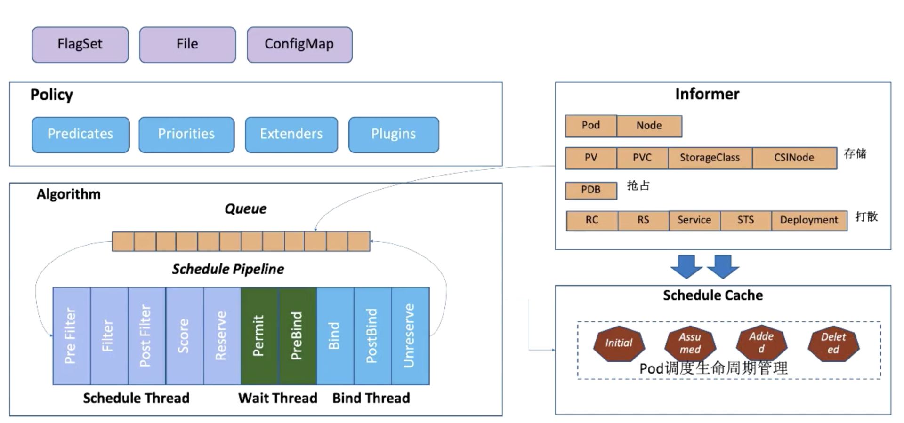
调度器启动时会通过配置文件 File，或者是命令行参数，或者是配置好的 ConfigMap，来指定调度策略。指定要用哪些过滤器 (Predicates)、打分器 (Priorities) 以及要外挂哪些外部扩展的调度器 (Extenders)，和要使用的哪些 Schedule 的扩展点 (Plugins)。
启动的时候会通过 kube-apiserver 去 watch 相关的数据，通过 Informer 机制将调度需要的数据 ：Pod 数据、Node 数据、存储相关的数据，以及在抢占流程中需要的 PDB 数据，和打散算法需要的 Controller-Workload 数据。
调度算法的流程大概是这样的：通过 Informer 去 watch 到需要等待的 Pod 数据，放到队列里面，通过调度算法流程里面，会一直循环从队列里面拿数据，然后经过调度流水线。
调度流水线 (Schedule Pipeline) 主要有三个组成部分：
在整个循环过程中，会有一个串行化的过程：从调度队列里面拿到一个 Pod 进入到 Schedule Theread 流程中，通过 Pre Filter--Filter--Post Filter--Score(打分)-Reserve，最后 Reserve 对账本做预占用。
基本调度流程结束后，会把这个任务提交给 Wait Thread 以及 Bind Thread，然后 Schedule Theread 继续执行流程，会从调度队列中拿到下一个 Pod 进行调度。
调度完成后，会去更新调度缓存 (Schedule Cache)，如更新 Pod 数据的缓存，也会更新 Node 数据。以上就是大概的调度流程。
接下来讲解一下调度的详细流程。
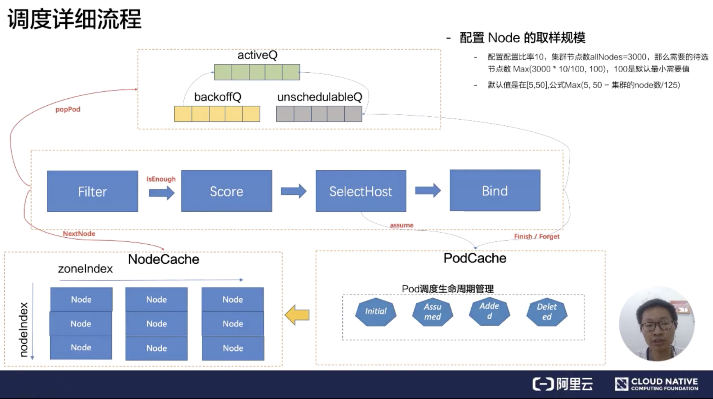
调度的详细流程中，调度队列分成三个队列：activeQ、backoffQ、unschedulableQ。
首先都会从 activeQ 里面 pop 一个 Pod 出来，然后经过调度流水线去调度。拿到一个等待调度的 Pod，会从 NodeCache 里面拿到相关的 Node 数据，这里有一个非常有意思的算法，就是 NodeCache 这里，在过滤阶段，调度器提供一种能力：可以不用过滤所有节点，取到最优节点。可通过调度器提供的取样能力，通过配置这个比例来拿到部分节点进行过滤及打分，然后选中节点进行 bind 流程。
提供这种能力需要在 NodeCache 里面注意一点，NodeCache 选中的节点需要足够分散，也就意味着容灾能力的增强。
在 NodeCache 中，Node 是按照 zone 进行分堆。在 filter 阶段的时候，为会 NodeCache 维护一个 zondeIndex，每 Pop 一个 Node 进行过滤，zoneIndex 往后挪一个位置，然后从该 zone 的 node 列表中取一个 node 出来。可以看到上图纵轴有一个 nodeIndex，每次也会自增。如果当前 zone 的节点无数据，那就会从下一个 zone 中拿数据。大概的流程就是 zoneIndex 从左向右，nodeIndex 从上到下，从而保证拿到的 Node 节点是按照 zone 打散，从而保证了在优化开启之后的容灾。
看一下过滤中的 Filter 和 Score 之间的 isEnough，就是刚才说过的取样比例。如果取样的规模已经达到了我们设置的取样比例，那 Filter 就会结束，不会再去过滤下一个节点。 然后过滤到的节点会经过打分器，打完分后会选择最优节点作为 pod 的分配位置。
分配 Pod 到 Node 的时候，需要对 Node 的内存做处理，将这个 Pod 分配到这个 Node 上，这个过程可以称呼为账本预占。 预占的过程会把 Pod 的状态标记为 Assumed 的状态(处于内存态)，紧接着就进入 bind 阶段，调用 kube-apiserver 将 Pod 的 NodeName 持久化到 etcd，这个时候 Pod 的状态还是 Assumed。只有在通过 Informer watch 到 Pod 数据已经确定分配到这个节点的时候，才会把状态变成 Added，Pod 调度生命周期大概是这样。
选中完节点在 Bind 的时候，有可能会 Bind 失败，在 Bind 失败的时候会做回退，就是把预占用的账本做 Assumed 的数据退回 Initial，也就是把 Assumed 状态擦除，从 Node 里面把 Pod 数据账本擦除掉。
如果 Bind 失败，会把 Pod 重新丢回到 unschedulableQ 队列里面。在调度队列中，什么情况下 Pod 会到 backoffQ 中呢？这是一个很细节的点。如果在这么一个调度周期里面，Cache 发生了变化，会把 Pod 放到 backoffQ 里面。在 backoffQ 里面等待的时间会比在 unschedulableQ 里面时间更短，backoffQ 里有一个降级策略，是 2 的指数次幂降级。假设重试第一次为 1s，那第二次就是 2s，第三次就是 4s，第四次就是 8s，最大到 10s，大概是这么一个机制。
unschedulableQ 里面的机制是：如果这个 Pod 一分钟没调度过，到一分钟的时候，它会把这个 Pod 重新丢回 activeQ。它的轮训周期是 30s，调度详细流程大概是这样。
取样规模这里大概介绍一下，它是怎么判断调度器的节点是足够的呢？按照默认值来说，默认的是在 [5-50%] 之间，公式为 Max (5,50 - 集群的 node 数 / 125)。为什么公式是这样的呢？大家有兴趣的可以自己查一下。
这里举个例子：假如配置比率是 10%，节点规模为 3000 个节点，需要待选的节点数 Max(3000 * 10/100,100)，最后得到的值是 300，跟 100 进行比较，100 默认是得到节点最小需要值。300 大于 100，那就按照 300 节点。在调度流水线里面，Filter 只要过滤到 300 个候选节点，就可以停止 Filter 流程了。
首先介绍一下过滤器，它可以分为四类：
简单介绍下存储相关的几个过滤器的功能：
MatchinterPodAffinity：主要是 PodAffinity 和 PodAntiAffinity 的校验逻辑。
这是一个新的功能特性，首先来看一下 EvenPodsSpread 中 Spec 描述：
-- 描述符合条件的一组 Pod 在指定 TopologyKey 上的打散要求。
下面我们来看一下怎么描述一组 Pod，如下图所示：
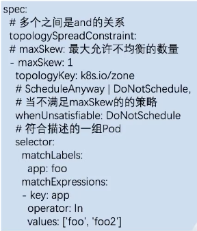
描述一组 Pod 的方式是可以通过 matchLabels 和 matchExpressions 来进行描述是否符合条件。
接下来可以描述在这一组 pod，是在哪个 topologyKey 上，比如说可以在一个 zone 级别上，也可以在一个 Node 级别上，然后可以设置 maxSkew：最大允许不均衡的数量。在不均衡的情况下可以设置 whenUnsatisfiable： DoNotSchedule，也就是不允许被调度，也可以选择随便调度。在过滤阶段，我们只关注 DoNotSchedule (不允许被调度)。
接下来我们看一下它的使用方式：
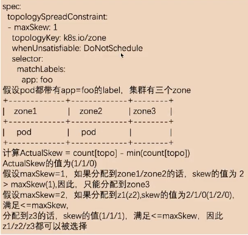
以上图中为例子：
假设 matchLabels 过滤的 app 是 foo，在 zone 级别是打散的，最大允许不均衡数为 1。
假设集群中有三个 zone，上图中 label的值app=foo 的 Pod 在 zone1 和 zone2 中都分配了一个 pod。
计算不均衡数量公式为：ActualSkew = count[topo] - min(count[topo])
首先我们会按照 topo 去分组，然后拿到符合条件的应用数量，最后减去最小的 zone 应用个数，就能算出来不均衡数是多少了。
如上图所示，假设 maxSkew 为 1，如果分配到 zone1/zone2，skew 的值为2，大于前面设置的 maxSkew。这是不匹配的，所以只能分配到 zone3。如果分配到 zone3 的话，min(count[topo]) 为1，count[topo]为 1，那 skew 就等于 0，因此只能分配到 zone2。
假设 maxSkew 为 2，分配到 z1(z2)，skew 的值为 2/1/0(1/2/0)，最大值为 2，满足 <=maxSkew。那 z1/z2/z3 都是允许被选择的。
通过这种描述，它最大的用处就是当我们对自己的应用有容灾要求的，必须在每一个 zone 上是均衡部署的，这时就可以用这个规则去限定。比如所有的 app 为 foo 的应用 maxSkew 数量为1，那它在每个 zone 上都是均衡的。
接下来看一下打分算法，打分算法主要解决的问题就是集群的碎片、容灾、水位、亲和、反亲和等。
按照类别可以分为四大类：
接下来介绍打分器相关的第一个资源水位。
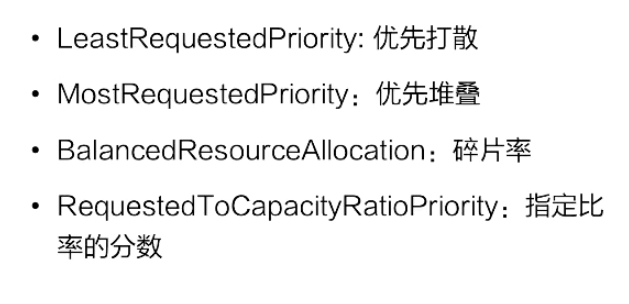
节点打分算法跟资源水位相关的主要有四个，如上图所示。
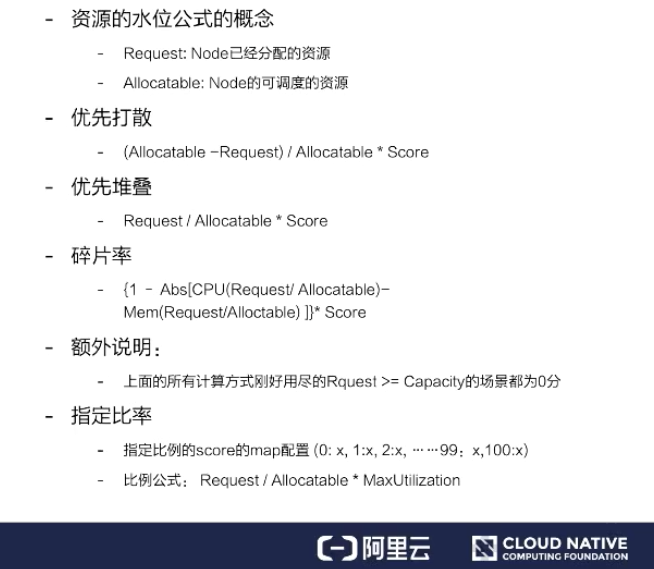
资源水位公式的概念：
优先打散：
顾名思义，我们应该把 Pod 分到可用资源最大比例的节点上。可用资源最大的公式就是 (Allocatable - Request) / Allocatable * Score。
这个比例就是表示如果这个 Pod 分配到这个 Node 上，还剩余的资源比例越大的话，越优先分配到这个节点上，从而达到打散的要求。
优先堆叠：
Request / Allocatable * Score。考虑的是如果 Pod 分配到 Request 的节点上，使用的资源比例越大，它应该越优先，从而达到优先堆叠。
碎片率：
{ 1 - Abs[CPU(Request / Allocatable) - Mem(Request / Allocatable)] } * Score。是用来考虑 CPU 的使用比例和内存使用比例的差值，这个差值就叫做碎片率。如果这个差值越大，就表示碎片越大，优先不分配到这个节点上。如果这个差值越小，就表示这个碎片率越小，那应该优先分配到这个节点上。
指定比率：
我们可以通过打分器，当资源使用的比率达到某个值时，用户指定配置参数可以指定不同比率的分数，从而达到控制集群上每个节点 node 的分布。
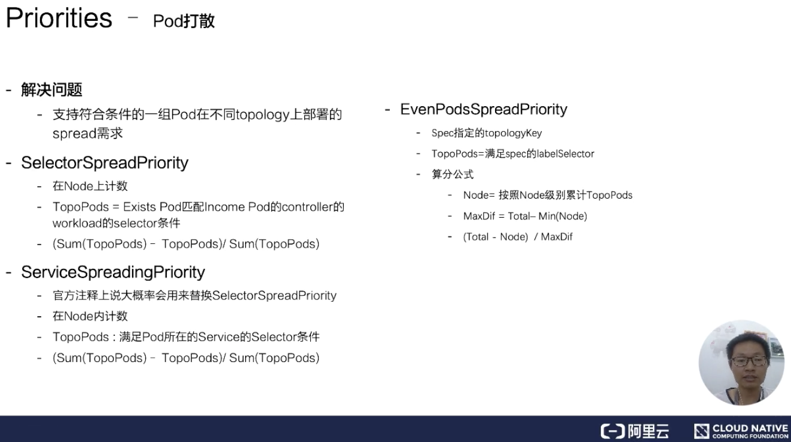
Pod 打散为了解决的问题为：支持符合条件的一组 Pod 在不同 topology 上部署的 spread 需求。
SelectorSpreadPriority
首先来介绍 SelectorSpreadPriority，它是为了满足 Pod 所属的 Controller 上所有的 Pod 在 Node 上打散的要求。实现方式是这样的：它会依据待分配的 Pod 所属的 controller，计算该 controller 下的所有 Pod,假设总数为 T，对这些 Pod 按照所在的 Node 分组统计；假设为 N (表示为某个 Node 上的统计值)，那么对 Node上的分数统计为 (T-N)/T 的分数，值越大表示这个节点的 controller 部署的越少，分数越高，从而达到 workload 的 pod 打散需求。
ServiceSpreadingPriority
官方注释上说大概率会用来替换 SelectorSpreadPriority，为什么呢？我个人理解：Service 代表一组服务，我们只要能做到服务的打散分配就足够了。
EvenPodsSpreadPriority
用来指定一组符合条件的 Pod 在某个拓扑结构上的打散需求，这样是比较灵活、比较定制化的一种方式，使用起来也是比较复杂的一种方式。
因为这个使用方式可能会一直变化，我们假设这个拓扑结构是这样的：Spec 是要求在 node 上进行分布的，我们就可以按照上图中的计算公式，计算一下在这个 node 上满足 Spec 指定 labelSelector 条件的 pod 数量，然后计算一下最大的差值，接着计算一下 Node 分配的权重，如果说这个值越大，表示这个值越优先。
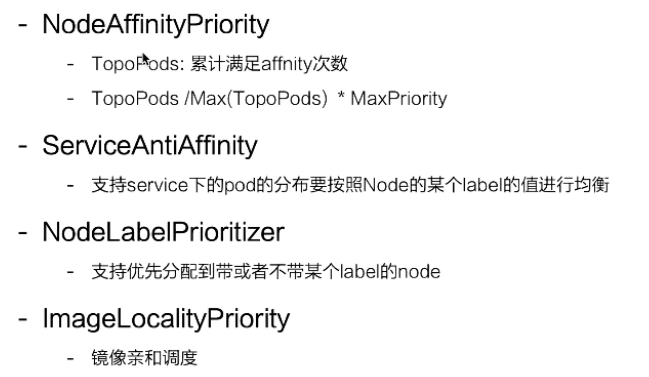
InterPodAffinityPriority
先介绍一下使用场景：
NodePreferAvoidPodsPriority
用于实现某些 controller 尽量不分配到某些节点上的能力；通过在 node 上加 annotation 声明哪些 controller 不要分配到 Node 上，如果不满足就优先。
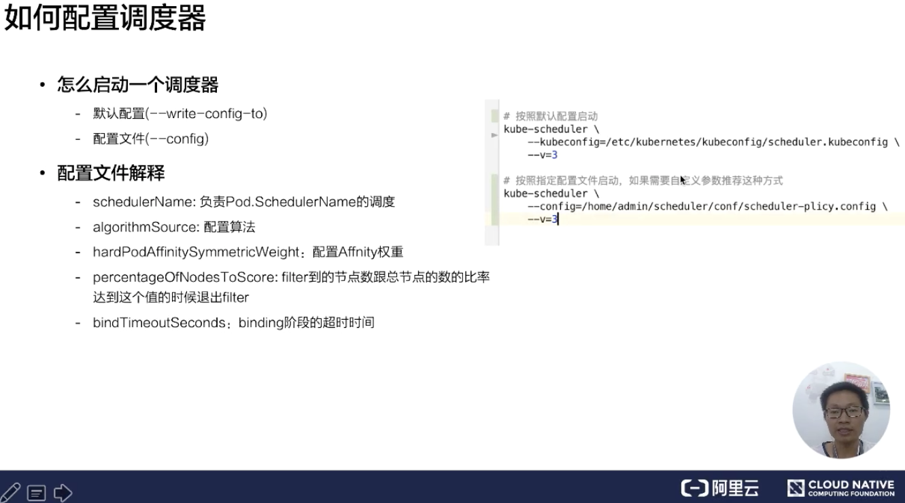
怎么启动一个调度器，这里有两种情况：
如果我们通过默认的方式启动的话，想知道默认配置启动的参数是哪些？可以用 --write-config-to 可以把默认配置写到一个指定文件里面。
下面来看一下默认配置文件，如下图所示：
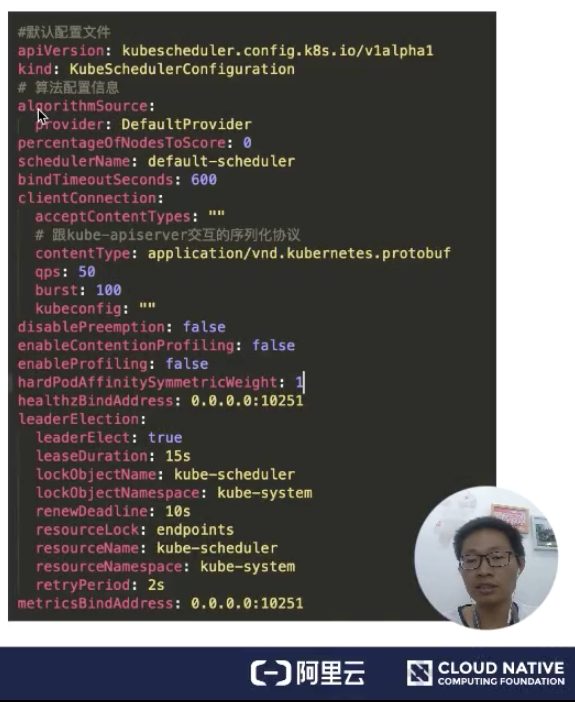
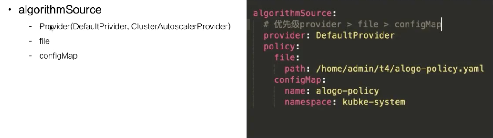
这里介绍一下过滤器、打分器等一些配置文件的格式，目前提供三种方式：
如果指定的是 Provider，有两种实现方式：
ClusterAutoscalerProvider 是优先堆叠的，DefaultPrivider 是优先打散的。关于这个策略，当你的节点开启了自动扩容，尽量使用 ClusterAutoscalerProvider 会比较符合你的需求。
这里看一下策略文件的配置内容，如下图所示：
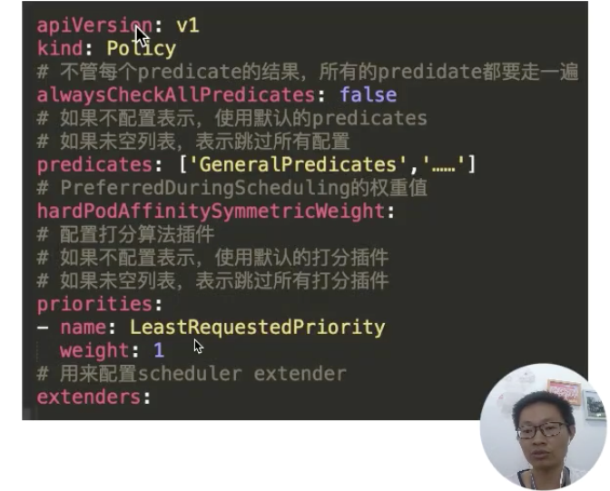
这里可以看到配置的过滤器 predicates，配置的打分器 priorities，以及我们配置的扩展调度器。这里有一个比较有意思的参数就是：alwaysCheckAllPredicates。它是用来控制当过滤列表有个返回 false 时，是否继续往下执行？默认的肯定是 false；如果配置成 true，它会把每个插件都走一遍。
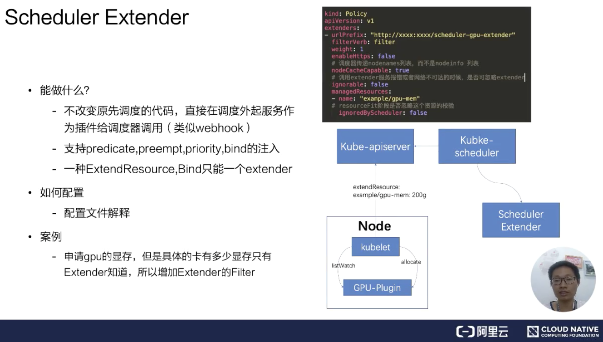
首先来看一下 Schedule Extender 能做什么？在启动官方调度器之后，可以再启动一个扩展调度器。
通过配置文件，如上文提到的 Polic 文件中 extender 的配置，包括 extender 服务的 URL 地址、是否 https 服务，以及服务是否已经有 NodeCache。如果有 NodeCache，那调度器只会传给 nodenames 列表。如果没有开启，那调度器会把所有 nodeinfo 完整结构都传递过来。
ignorable 这个参数表示调度器在网络不可达或者是服务报错，是否可以忽略扩展调度器。managedResources，官方调度器在遇到这个 Resource 时会用扩展调度器，如果不指定表示所有的都会使用扩展调度器。
这里举个 GPU share 的例子。在扩展调度器里面会记录每个卡上分配的内存大小，官方调度器只负责 Node 节点上总的显卡内存是否足够。这里扩展资源叫 example/gpu-men: 200g，假设有个 Pod 要调度，通过 kube-scheduler 会看到我们的扩展资源，这个扩展资源配置要走扩展调度器，在调度阶段就会通过配置的 url 地址来调用扩展调度器，从而能够达到调度器能够实现 gpu-share 的能力。
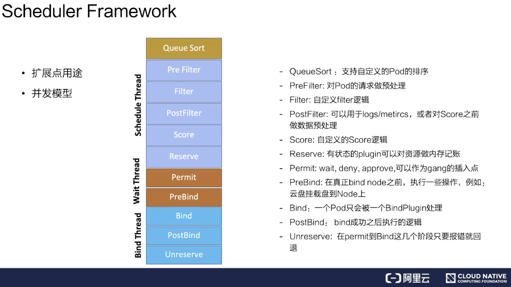
这里分成两点来说，从扩展点用途和并发模型分别介绍。
扩展点的主要用途主要有以下几个
并发模型意思是主调度流程是在 Pre Filter 到 Reserve，如上图浅蓝色部分所示。从 Queue 拿到一个 Pod 调度完到 Reserve 就结束了，接着会把这个 Pod 异步交给 Wait Thread，Wait Thread 如果等待成功了，就会交给 Bind Thread，就是这样一个线程模型。
如何编写注册自定义 Plugin？
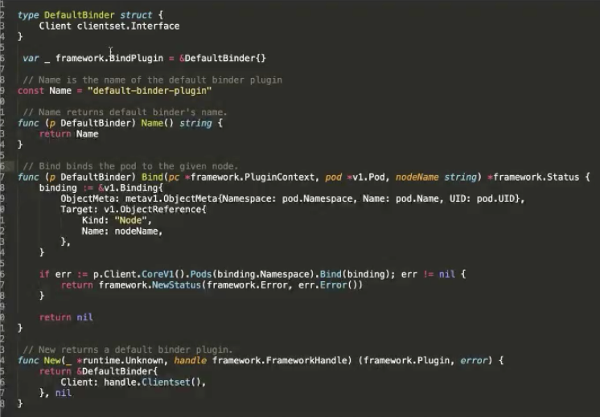
这里是一个官方的例子，在 Bind 阶段，要将 Pod 绑定到某个 Node 上，对 Kube-apiserver 做 Bind。这里可以看到主要有两个接口，bind 的接口是声明调度器的名称，以及 bind 的逻辑是什么。最后还要实现一个构造方法，告诉它的构造方法是怎样的逻辑。
启动自定义 Plugin 的调度器：
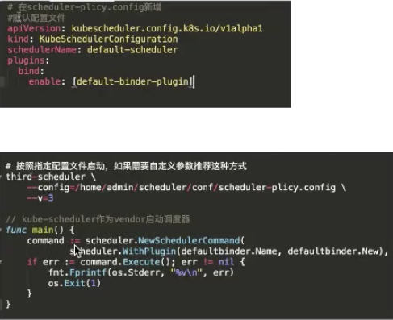
在启动的时候可以通过两种方式去注册。
本节课的主要内容就到此为止了，谢谢大家观看。这里为大家简单总结一下：